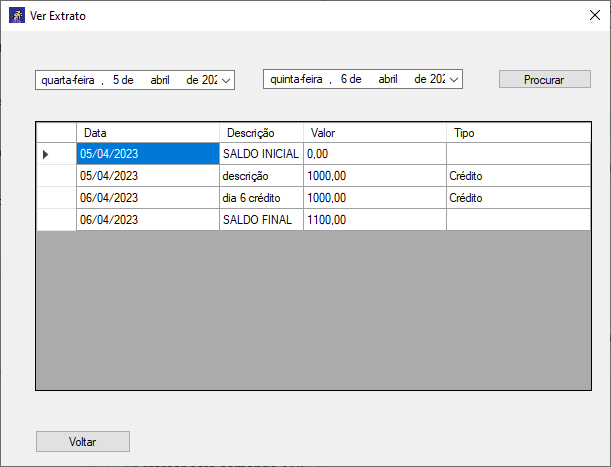
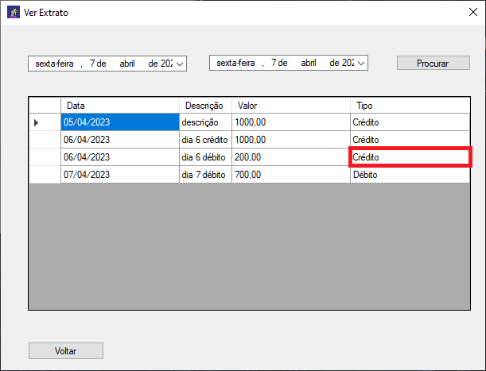
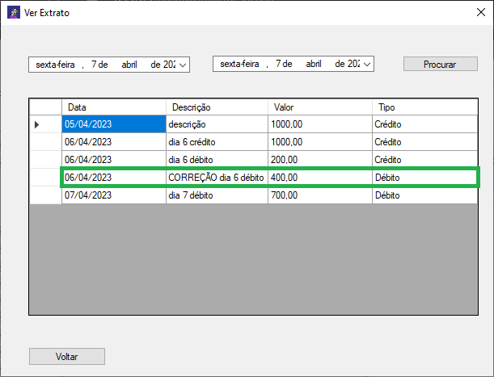

Adicionar Movimento
Para adicionar um novo movimento, deve-se definir a data, descrição, valor e tipo da operação: crédito, para acrescentar valor, ou débito, para retirar valor. Depois disso, basta clicar em “Adicionar”.

Ver Extrato
Ainda nessa tela, clique em “Ver extrato”, e uma nova tela se abrirá, mostrando inicialmente todos os movimentos já adicionados. Para visualizar apenas os movimentos de um período específico, coloque as datas inicial e final nos campos de data na parte superior da tela e clique em “Procurar”.


Adicionarei um movimento de débito ao dia 06/04.

Ops! Errei e acabei colocando a operação como crédito. E agora? Bem, como não há como excluí-lo, devemos adicionar mais um corrigindo-o.
